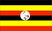
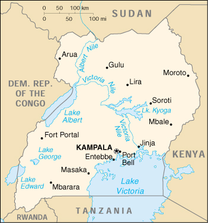

{kind=link}


| Uganda |  |
|
|  | |
| Introduction |
Background: Uganda achieved independence from the UK in 1962. The dictatorial regime of Idi AMIN (1971-79) was responsible for the deaths of some 300,000 opponents; guerrilla war and human rights abuses under Milton OBOTE (1980-85) claimed another 100,000 lives. During the 1990s the government has promulgated non-party presidential and legislative elections.
| Geography |
Location: Eastern Africa, west of Kenya
Geographic coordinates: 1 00 N, 32 00 E
Map references: Africa
Area:
total:
236,040 sq km
land:
199,710 sq km
water:
36,330 sq km
Area - comparative: slightly smaller than Oregon
Land boundaries:
total:
2,698 km
border countries:
Democratic Republic of the Congo 765 km, Kenya 933 km, Rwanda 169 km, Sudan 435 km, Tanzania 396 km
Coastline: 0 km (landlocked)
Maritime claims: none (landlocked)
Climate: tropical; generally rainy with two dry seasons (December to February, June to August); semiarid in northeast
Terrain: mostly plateau with rim of mountains
Elevation extremes:
lowest point:
Lake Albert 621 m
highest point:
Margherita Peak on Mount Stanley 5,110 m
Natural resources: copper, cobalt, hydropower, limestone, salt, arable land
Land use:
arable land:
25%
permanent crops:
9%
permanent pastures:
9%
forests and woodland:
28%
other:
29% (1993 est.)
Irrigated land: 90 sq km (1993 est.)
Natural hazards: NA
Environment - current issues: draining of wetlands for agricultural use; deforestation; overgrazing; soil erosion; poaching is widespread
Environment - international agreements:
party to:
Biodiversity, Climate Change, Desertification, Endangered Species, Hazardous Wastes, Law of the Sea, Marine Life Conservation, Nuclear Test Ban, Ozone Layer Protection, Wetlands
signed, but not ratified:
Environmental Modification
Geography - note: landlocked
| People |
Population:
23,317,560
note:
estimates for this country explicitly take into account the effects of excess mortality due to AIDS; this can result in lower life expectancy, higher infant mortality and death rates, lower population and growth rates, and changes in the distribution of population by age and sex than would otherwise be expected (July 2000 est.)
Age structure:
0-14 years:
51% (male 5,986,645; female 5,936,754)
15-64 years:
47% (male 5,443,613; female 5,448,563)
65 years and over:
2% (male 240,819; female 261,166) (2000 est.)
Population growth rate: 2.72% (2000 est.)
Birth rate: 48.04 births/1,000 population (2000 est.)
Death rate: 18.44 deaths/1,000 population (2000 est.)
Net migration rate:
-2.4 migrant(s)/1,000 population (2000 est.)
note:
according to the UNHCR, by the end of 1998, Uganda was host to 205,000 refugees from a number of neighboring countries, including: Sudan 190,000, Rwanda 7,500, and Democratic Republic of the Congo 5,400; refugees began returning to their countries of origin in 2000
Sex ratio:
at birth:
1.03 male(s)/female
under 15 years:
1.01 male(s)/female
15-64 years:
1 male(s)/female
65 years and over:
0.92 male(s)/female
total population:
1 male(s)/female (2000 est.)
Infant mortality rate: 93.25 deaths/1,000 live births (2000 est.)
Life expectancy at birth:
total population:
42.93 years
male:
42.22 years
female:
43.67 years (2000 est.)
Total fertility rate: 6.96 children born/woman (2000 est.)
Nationality:
noun:
Ugandan(s)
adjective:
Ugandan
Ethnic groups: Baganda 17%, Karamojong 12%, Basogo 8%, Iteso 8%, Langi 6%, Rwanda 6%, Bagisu 5%, Acholi 4%, Lugbara 4%, Bunyoro 3%, Batobo 3%, non-African (European, Asian, Arab) 1%, other 23%
Religions: Roman Catholic 33%, Protestant 33%, Muslim 16%, indigenous beliefs 18%
Languages: English (official national language, taught in grade schools, used in courts of law and by most newspapers and some radio broadcasts), Ganda or Luganda (most widely used of the Niger-Congo languages, preferred for native language publications in the capital and may be taught in school), other Niger-Congo languages, Nilo-Saharan languages, Swahili, Arabic
Literacy:
definition:
age 15 and over can read and write
total population:
61.8%
male:
73.7%
female:
50.2% (1995 est.)
| Government |
Country name:
conventional long form:
Republic of Uganda
conventional short form:
Uganda
Data code: UG
Government type: republic
Capital: Kampala
Administrative divisions: 39 districts; Apac, Arua, Bundibugyo, Bushenyi, Gulu, Hoima, Iganga, Jinja, Kabale, Kabarole, Kalangala, Kampala, Kamuli, Kapchorwa, Kasese, Kibale, Kiboga, Kisoro, Kitgum, Kotido, Kumi, Lira, Luwero, Masaka, Masindi, Mbale, Mbarara, Moroto, Moyo, Mpigi, Mubende, Mukono, Nebbi, Ntungamo, Pallisa, Rakai, Rukungiri, Soroti, Tororo
Independence: 9 October 1962 (from UK)
National holiday: Independence Day, 9 October (1962)
Constitution: 8 October 1995; adopted by the interim, 284-member Constituent Assembly, charged with debating the draft constitution that had been proposed in May 1993; the Constituent Assembly was dissolved upon the promulgation of the constitution in October 1995
Legal system: in 1995, the government restored the legal system to one based on English common law and customary law; accepts compulsory ICJ jurisdiction, with reservations
Suffrage: 18 years of age; universal
Executive branch:
chief of state:
President Lt. Gen. Yoweri Kaguta MUSEVENI (since seizing power 29 January 1986); note - the president is both chief of state and head of government
head of government:
President Lt. Gen. Yoweri Kaguta MUSEVENI (since seizing power 29 January 1986); Prime Minister Apollo NSIBAMBI (since 5 April 1999); note - the president is both chief of state and head of government; the prime minister assists the president in the supervision of the cabinet
cabinet:
Cabinet appointed by the president from among elected legislators
elections:
president elected by popular vote for a five-year term; election last held 9 May 1996 (next to be held by 31 May 2001); note - first popular election for president since independence in 1962 was held in 1996; prime minister appointed by the president
election results:
Lt. Gen. Yoweri Kaguta MUSEVENI elected president; percent of vote - Lt. Gen. Yoweri Kaguta MUSEVENI 74%, Paul Kawanga SSEMOGERERE 24%, Muhammad MAYANJA 2%
Legislative branch:
unicameral National Assembly (276 members - 214 directly elected by popular vote, 62 nominated by legally established special interest groups and approved by the president - women 39, army 10, disabled 5, youth 5, labor 3; members serve five-year terms)
elections:
last held 27 June 1996 (next to be held NA 2001);
election results:
NA; note - election campaigning by party was not permitted
Judicial branch: Court of Appeal, judges are appointed by the president; High Court, judges are appointed by the president
Political parties and leaders:
only one political organization, the National Resistance Movement or NRM [President MUSEVENI, chairman] is recognized; note - the president maintains that the NRM is not a political party, but a movement which claims the loyalty of all Ugandans
note:
of the political parties that exist but are prohibited from sponsoring candidates, the most important are the Ugandan People's Congress or UPC [Milton OBOTE]; Democratic Party or DP [Paul SSEMOGERERE]; and Conservative Party or CP [Joshua S. MAYANJA-NKANGI]; the new constitution requires the suspension of political party activity until a referendum is held on the matter in 2000
International organization participation: ACP, AfDB, C, CCC, EADB, ECA, FAO, G-77, IAEA, IBRD, ICAO, ICFTU, ICRM, IDA, IDB, IFAD, IFC, IFRCS, IGAD, ILO, IMF, Intelsat, Interpol, IOC, IOM, ISO (correspondent), ITU, NAM, OAU, OIC, OPCW, PCA, UN, UNCTAD, UNESCO, UNHCR, UNIDO, UPU, WFTU, WHO, WIPO, WMO, WToO, WTrO
Diplomatic representation in the US:
chief of mission:
Ambassador Edith Grace SSEMPALA
chancery:
5911 16th Street NW, Washington, DC 20011
telephone:
[1] (202) 726-7100 through 7102, 0416
FAX:
[1] (202) 726-1727
Diplomatic representation from the US:
chief of mission:
Ambassador Martin G. BRENNAN
embassy:
Parliament Avenue, Kampala
mailing address:
P. O. Box 7007, Kampala
telephone:
[256] (41) 259792, 259793, 259795
FAX:
[256] (41) 259794
Flag description: six equal horizontal bands of black (top), yellow, red, black, yellow, and red; a white disk is superimposed at the center and depicts a red-crested crane (the national symbol) facing the hoist side
| Economy |
Economy - overview: Uganda has substantial natural resources, including fertile soils, regular rainfall, and sizable mineral deposits of copper and cobalt. Agriculture is the most important sector of the economy, employing over 80% of the work force. Coffee is the major export crop and accounts for the bulk of export revenues. Since 1986, the government - with the support of foreign countries and international agencies - has acted to rehabilitate and stabilize the economy by undertaking currency reform, raising producer prices on export crops, increasing prices of petroleum products, and improving civil service wages. The policy changes are especially aimed at dampening inflation and boosting production and export earnings. In 1990-99, the economy turned in a solid performance based on continued investment in the rehabilitation of infrastructure, improved incentives for production and exports, reduced inflation, gradually improved domestic security, and the return of exiled Indian-Ugandan entrepreneurs. Ongoing Ugandan involvement in the war in the Democratic Republic of the Congo, growing corruption within the government, and slippage in the government's determination to press reforms raise doubts about the continuation of strong growth.
GDP: purchasing power parity - $24.2 billion (1999 est.)
GDP - real growth rate: 5.5% (1999 est.)
GDP - per capita: purchasing power parity - $1,060 (1999 est.)
GDP - composition by sector:
agriculture:
44%
industry:
17%
services:
39% (1997 est.)
Population below poverty line: 55% (1993 est.)
Household income or consumption by percentage share:
lowest 10%:
3%
highest 10%:
33.4% (1992)
Inflation rate (consumer prices): 7% (1999)
Labor force: 8.361 million (1993 est.)
Labor force - by occupation: agriculture 82%, industry 5%, services 13% (1999 est.)
Unemployment rate: NA%
Budget:
revenues:
$959 million
expenditures:
$1.04 billion, including capital expenditures of $NA (FY98/99 est.)
Industries: sugar, brewing, tobacco, cotton textiles, cement
Industrial production growth rate: 9.3% (FY98/99)
Electricity - production: 792 million kWh (1998)
Electricity - production by source:
fossil fuel:
0.88%
hydro:
99.12%
nuclear:
0%
other:
0% (1998)
Electricity - consumption: 622 million kWh (1998)
Electricity - exports: 115 million kWh (1998)
Electricity - imports: 0 kWh (1998)
Agriculture - products: coffee, tea, cotton, tobacco, cassava (tapioca), potatoes, corn, millet, pulses; beef, goat meat, milk, poultry
Exports: $471 million (f.o.b., 1999)
Exports - commodities: coffee, fish and fish products, tea; electrical products, iron and steel
Exports - partners: EU 51% (Netherlands 6%, Switzerland 6%, Germany 5%, Belgium 4%), Kenya 5% (1998)
Imports: $1.1 billion (f.o.b., 1999)
Imports - commodities: vehicles, petroleum, medical supplies; cereals
Imports - partners: Kenya 12%, UK 6%, Japan 4%, India 4%, South Africa (1998)
Debt - external: $3.1 billion (1998 est.)
Economic aid - recipient: $839.9 million (1997)
Currency: 1 Ugandan shilling (USh) = 100 cents
Exchange rates: Ugandan shillings (USh) per US$1 - 1,525.8 (January 2000), 1,454.8 (1999), 1,240.2 (1998), 1,083.0 (1997), 1,046.1 (1996), 968.9 (1995)
Fiscal year: 1 July - 30 June
| Communications |
Telephones - main lines in use: 54,074 (1998)
Telephones - mobile cellular: 9,000 (1998)
Telephone system:
seriously inadequate; two cellular systems have been introduced, but a sharp increase in the number of main lines is essential; e-mail and Internet services are available
domestic:
intercity traffic by wire, microwave radio relay, and radiotelephone communication stations, fixed and mobile cellular systems for short range traffic
international:
satellite earth stations - 1 Intelsat (Atlantic Ocean) and 1 Inmarsat; analog links to Kenya and Tanzania
Radio broadcast stations: AM 19, FM 4, shortwave 5 (1998)
Radios: 2.6 million (1997)
Television broadcast stations: 8 (plus one low-power repeater) (1999)
Televisions: 315,000 (1997)
Internet Service Providers (ISPs): 3 (1999)
| Transportation |
Railways:
total:
1,241 km
narrow gauge:
1,241 km 1.000-m gauge
note:
a program to rehabilitate the railroad is underway (1995)
Highways:
total:
27,000 km
paved:
1,800 km
unpaved:
25,200 km (of which about 4,800 km are all-weather roads) (1990 est.)
Waterways: Lake Victoria, Lake Albert, Lake Kyoga, Lake George, Lake Edward, Victoria Nile, Albert Nile
Ports and harbors: Entebbe, Jinja, Port Bell
Merchant marine:
total:
3 ships (1,000 GRT or over) totaling 5,091 GRT/8,229 DWT
ships by type:
roll-on/roll-off 3 (1999 est.)
Airports: 26 (1999 est.)
Airports - with paved runways:
total:
4
over 3,047 m:
3
1,524 to 2,437 m:
1 (1999 est.)
Airports - with unpaved runways:
total:
22
2,438 to 3,047 m:
1
1,524 to 2,437 m:
6
914 to 1,523 m:
8
under 914 m:
7 (1999 est.)
Heliports: 1 (1999 est.)
| Military |
Military branches: Army, Navy, Air Wing
Military manpower - availability:
males age 15-49:
4,952,945 (2000 est.)
Military manpower - fit for military service:
males age 15-49:
2,687,924 (2000 est.)
Military expenditures - dollar figure: $95 million (FY98/99)
Military expenditures - percent of GDP: 1.9% (FY98/99)
| Transnational Issues |
Disputes - international: Ugandan military forces are supporting the rebel forces in the civil war in the Democratic Republic of the Congo